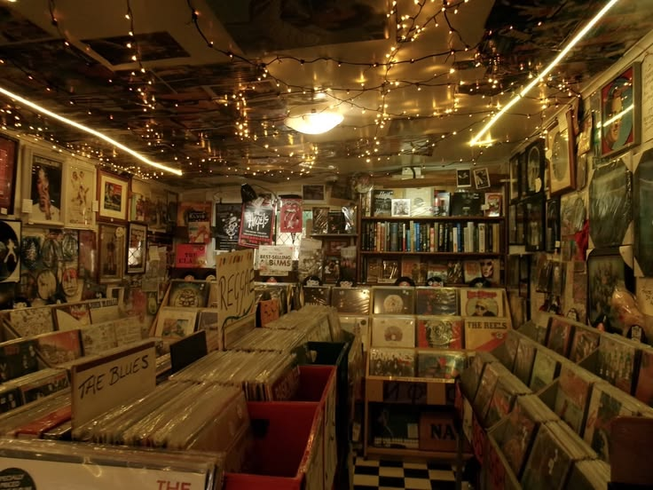
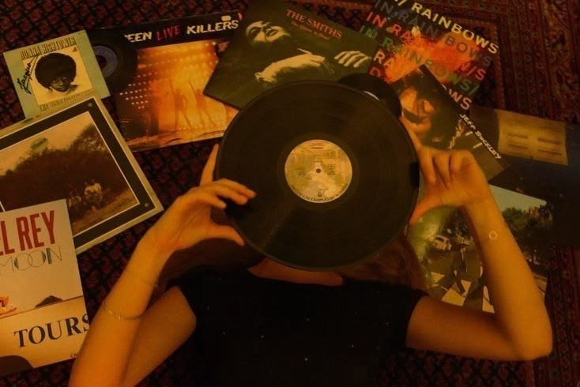

The Soulful Record Store was created and is owned by Jadyn Welsh. She bought the store in October 2026 and opened it just recently. Jadyn Welsh was born in Harrisburg, PA and lived there every since. She is 21 years old. She began her journey to own the store in 2025. She knew she wanted to own a business, but she wasn't quite sure what, whether it was making crochet items or selling music. Late 2025, she made her choice and decided to sell music. Jadyn's love for music inspired her to share her music taste with others.

The record store holds music genres such as R&B, Indie rock, Neo Soul, and Alternative Hip Hop. The store's prices range from $15 to $100 to be somewhat affordable to buyers. Everyone is welcome and the store is pet friendly. Please bring your family and friends and enjoy some music!